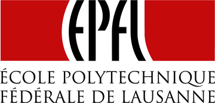

Experienced in the management of technology, from software engineering and architecture to portfolio governance, Agile transformation, and delivery leadership, across financial services, healthcare, manufacturing, and enterprise software, often in highly regulated environments.
- Languages: English, German, French, Persian
- Worked in North America and Europe
- AI-augmented delivery with Claude, Copilot, and Gemini
- Strengths-based coaching
Education
-

M.S., Computer Science (Distributed Internet Computing)
EPFL, Lausanne, Switzerland
-
UC Berkeley, California
Core competence
- Program and portfolio leadership
- Portfolio governance, strategic planning, program execution, risk and dependency management, executive stakeholder management, portfolio health metrics, change leadership, roadmap and capacity planning
- Software engineering and architecture
- Software architecture, enterprise application development, distributed systems, API design and integration, SDLC leadership, cloud-native systems, DevSecOps, CI/CD
- Governance, risk, and compliance
- Audit readiness, regulatory compliance, technology risk management, governance framework design, penetration test coordination, vulnerability remediation oversight
- AI and data
- AI-augmented delivery, prompt design and context engineering, specification writing, workflow automation, analytics and KPI frameworks, evaluation of emerging technologies
- Transformation and operations
- Organizational transformation, operating model evolution, process optimization, continuous improvement, M&A integration, Agile coaching (SAFe, Scrum, Kanban)
- Leadership and collaboration
- Global team leadership, executive communication, workshop facilitation, requirements engineering, vendor management, influence without authority
Technical skills
- Engineering
- Distributed systems, software architecture, API design and integration, C#, Java, JavaScript, PHP, SQL and relational databases, data pipelines, test automation, performance optimization, observability
- Cloud and delivery
- Azure, AWS, DevSecOps, CI/CD toolchains, release management, secure SDLC, vulnerability management
- Tools and platforms
- Atlassian (Jira and Confluence), Azure DevOps, GitHub, ServiceNow, Salesforce, DragonBoat, Beeline, Clarity PPM, OnePPM, Microsoft Project, Power BI, Tableau
- AI
- Copilot, ChatGPT, Claude, Gemini, prompt design, context engineering, workflow automation
Leadership and community
- Volunteer program contributor, PMI San Francisco Bay Area Chapter, supporting sustainability initiatives and cross-chapter collaboration
- Competitive rowing, US Rowing: teamwork, discipline, and endurance
- Member, Network, the Gay Business Leadership Network in Switzerland